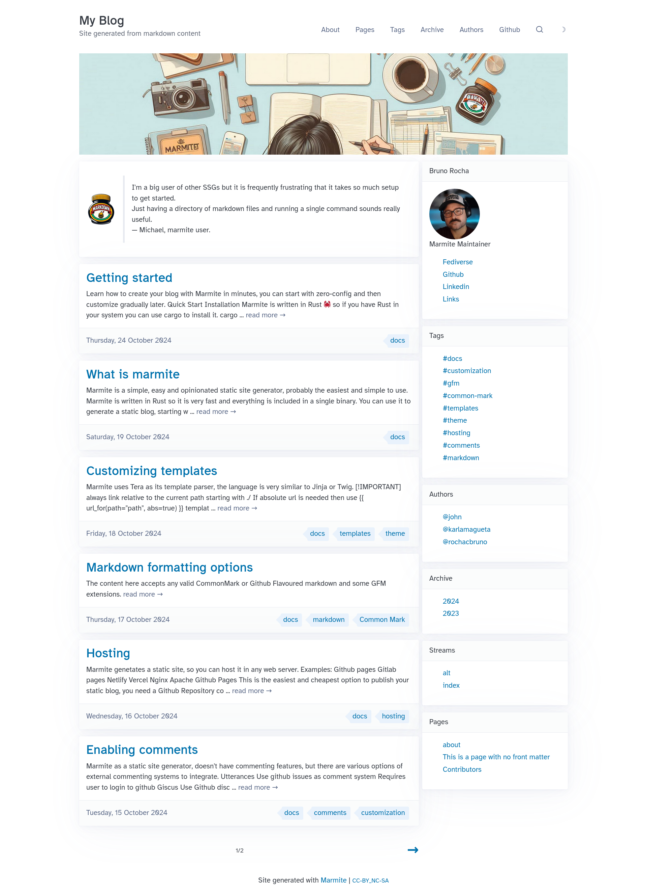

Customizing Templates
Friday, 18 October 2024 - ⧖ 18 minMarmite uses Tera as its template parser, the language is very similar to Jinja or Twig.
[!IMPORTANT]
always link relative to the current path starting with./
If absolute url is needed then use{{ url_for(path="path", abs=true) }}template function.
Example on templates/list.html
{% extends "base.html" %}
{% block main %}
<div class="content-list">
{%- for content in content_list %}
<h2 class="content-title"><a href="./{{content.slug}}.html">{{ content.title | capitalize }}</a></h2>
<p class="content-excerpt">{{ content.html | striptags | truncate(length=100, end="...") }}</p>
{%- endfor %}
</div>
{% endblock %}
Starting a new theme
$ marmite input_folder output_folder --start-theme
Generated input_folder/templates
Generated input_folder/static
Then you can start customizing those assets.
If instead, you just want to customize the templates use --init-templates
and the custom.css and custom.js in the root of the project.
Templates
all templates are rendered with the global context.
site_data:
posts: [Content]
pages: [Content]
tag: GroupedContent
archive: GroupedContent
author: GroupedContent
stream: GroupedContent
site:
name: str
url: str
tagline: str
pagination: int
extra: {k, v}
...the keys on site configuration.
menu: [[name, link]]
The Content object can be a page or a post and contains
title: str
slug: str
html: str
tags: [str] or []
date: DateTimeObject or None
extra: {key: value}
links_to: [str] or None
back_links: [Content] or []
card_image: str or None
banner_image: str or None
authors: [str] or []
pinned: bool
toc: str or None
The GroupedContent is a map that when iterated returns a map of name: [Content], this is available on global context,
which means tag, archive and author groups can be accessed on any template, however it is not recommended to access it directly,
because those are unordered, to get an ordered version use group function:
<ul class="content-tags">
{% for name, items in group(kind="tag") -%} <!-- kind can be one of [tag,archive,author] -->
<li><a href="./tag-{{ name | trim | slugify }}.html">{{ name }}</a><span class="tag-count"> [{{ items | length }}]</span></li>
{%- endfor %}
</ul>
There are 10 templates inside the templates folder, each adds more data to context.
- base.html
- All other templates inherits blocks from this one.
- list.html
- Renders
index.html,pages.html,tag-{name}.html,archive-{year}.html,author-{username}.html - adds
title:str,content_list: [Content], - adds
author: Authorwhen renderingauthor-*.htmlpages. - pagination:
current_page: str,next_page:str,previous_page:str,total_pages:int,current_page_number:int,total_content:int
- Renders
- content.html
- Renders individual content page
my-post.html - adds
title:str,content: [Content],current_page: str
- Renders individual content page
- group.html
- Renders grouped information such as
tags.htmlandarchive.html - adds
title:str,current_page: str,kind:str
- Renders grouped information such as
Include templates:
Those are templates that are not meant to be rendered directly, those are included on other templates.
- pagination.html
- Render the pagination controls
- included on
list.html
- comments.html
- Render the comment box
- included on
content.html
- content_authors.html
- Renders the small list of authors on botton of content
- included on
content.html
- content_date.html
- Renders the article date
- included on
content.htmlandcontent_title.html
- content_title.html
- Renders the main title of the content + date and reading time
- included on
content.html
- group_author_avatar.html
- Renders the author avatar image
- included on
group.html(if author is defined)
When customizing the templates you can create new templates to use as include or macro but the 4 listed above are required.
If you just want to customize some individual template you can add only it in the templates/ folder and the rest will be added by marmite.
See the templates on: https://github.com/rochacbruno/marmite/tree/main/example/templates
Customizing the index template
In the case you want to keep using the built-in theme but want to customize the index page of your site you can
just add a templates/custom_index.html to your input folder.
This template will be used for the index folder instead of the list.html and you can do whatever you want on it,
using the objets and functions available on the context.
Example of a custom index template.
Click Here to see the code for an example `templates/custom_index.html`
{% extends "base.html" %}
{% block head %}
{# this head block is not needed if CSS is moved to custom.css #}
{{ super() }}
<style>
.content-banner-image {
background-size: cover;
background-position: center;
height: 300px;
margin-bottom: 20px;
background-image: url('media/og_image.jpg');
}
.main-div {
display: flex;
grid-column-gap: 10px;
grid-row-gap: 0px;
}
.left {
width: 70%;
}
.right {
width: 30%;
}
.right li {
list-style-type: none;
}
.author-card img {
width: 150px;
height: 150px;
border-radius: 50%;
}
@media (max-width: 1024px) {
.main-div {
display: block;
}
.left {
width: 100%;
}
.right {
width: 100%;
}
}
</style>
{% endblock %}
{% block main %}
<div class="content-banner-image"></div>
<div class="main-div">
<div class="left">
{% if hero is defined %}
<div class="hero">
<article>
{{hero}}
</article>
</div>
{% endif %}
{%- for content in content_list %}
<article class="content-card">
<h2 class="content-title"><a href="./{{content.slug}}.html">{{ content.title | capitalize }}</a></h2>
<p class="content-excerpt">
{% if content.description %}
{{ content.description | replace(from='"', to="") | truncate(length=250, end=" ...") }}
{% else %}
{{ content.html | striptags | trim_start_matches(pat=content.title) | truncate(length=250, end=" ...") }}
{%- endif %}
<a class="secondary" href="./{{content.slug}}.html">read more →</a>
</p>
{% if content.date -%}
<footer class="data-tags-footer">
<span class="content-date"><a class="secondary" href="./{{content.slug}}.html">{{ content.date | default_date_format }}</a></span>
{% if content.tags -%}
<ul class="content-tags overflow-auto">
{% for tag in content.tags | slice(end=3) -%}
<li><a href="./tag-{{ tag | trim | slugify }}.html">{{ tag }}</a></li>
{%- endfor %}
</ul>
{%- endif %}
</footer>
{%- endif %}
</article>
{%- endfor %}
{% if total_pages is defined and total_pages > 1 %}
{% include "pagination.html" ignore missing %}
{% endif %}
</div>
<div class="right">
{% if site.authors %}
{% for username, author in site.authors %}
<article class="author-card">
<header>{{author.name}}</header>
<img src="{{author.avatar}}" alt="{{author.name}}">
<p>{{author.bio}}</p>
<ul>
{% for link in author.links %}
<li><a href="{{link.1}}">{{link.0}}</a></li>
{% endfor %}
</ul>
</article>
{% break %} {# only show the first author #}
{% endfor %}
{% endif %}
<article>
<header>Tags</header>
<ul>
{% for name, _ in group(kind="tag") %}
<li><a href="tag-{{name | slugify}}.html">#{{name | slugify}}</a></li>
{% endfor %}
</ul>
</article>
<article>
<header>Authors</header>
<ul>
{% for name, _ in group(kind="author") %}
<li><a href="author-{{name | slugify}}.html">@{{name}}</a></li>
{% endfor %}
</ul>
</article>
<article>
<header>Archive</header>
<ul>
{% for year, _ in group(kind="archive") %}
<li><a href="archive-{{year}}.html">{{year}}</a></li>
{% endfor %}
</ul>
</article>
<article>
<header>Streams</header>
<ul>
{% for stream, _ in group(kind="stream") %}
<li><a href="{{stream}}.html">{{stream}}</a></li>
{% endfor %}
</ul>
</article>
<article>
<header>Pages</header>
<ul>
{% for page in site_data.pages %}
<li><a href="{{page.slug}}.html">{{page.title}}</a></li>
{% endfor %}
</ul>
</article>
</div>
</div>
{% endblock %}
With the above HTML your index page will look like:

[!NOTE]
A custom index can be created for any stream, name the templatecustom_{stream}.html
Static files
Just create a static folder side by side with your templates folder and add
all css, js, fonts etc on this folder.
Marmite will copy this folder to the output site, if this folder is not found marmite will then copy the embedded static files to the static folder.
URL
Prefer to use relative paths for URLS, examples:
./my-blog-post.html./static/style.css./media/photo.png
This is recommended because marmite will always generate a flat html website, there is no subpaths.
If you need absolute url use the url_for function to refer to urls.
{{ url_for(path='static/mystyle.css', abs=true) }}
Extra data
On site config marmite.yaml there is an arbitrary field extra that can be accessed
on any template.
extra:
myname: Bruno
Then on an template.
{{site.extra.myname}}
On each individual post there is a extra arbitrary field, so on list.html and
content.html this field can also be accessed.
---
extra:
image: media/banner.jpg
---
then on template
<img src="{{url_for(content.extra.image)}}">
Raw HTML on markdown
Tera is configured to allow raw html on markdown, so any html tag will be allowed, a markdown file can include for example embeds, scripts, etc..
Tera Object
Here the Tera object for reference, to see each individual filter or tester documentation read https://keats.github.io/tera/docs/#templates
Tera {
templates: [
group.html,
base.html,
list.html,
content.html,
pagination.html,
comments.html,
]
functions: [
group,
url_for,
]
filters: [
default_date_format,
reverse,
trim_start,
trim,
unique,
float,
trim_end,
join,
group_by,
lower,
trim_start_matches,
wordcount,
title,
trim_end_matches,
indent,
filter,
map,
pluralize,
upper,
first,
slice,
last,
round,
length,
date,
filesizeformat,
urlencode,
urlencode_strict,
nth,
escape_xml,
truncate,
striptags,
abs,
linebreaksbr,
spaceless,
slugify,
addslashes,
capitalize,
escape,
split,
int,
concat,
as_str,
sort,
replace,
get,
json_encode,
]
testers: [
number,
object,
ending_with,
defined,
odd,
matching,
even,
containing,
iterable,
undefined,
string,
starting_with,
divisibleby,
]
}
Please consider giving a ☆ on Marmite Github repository, that helps a lot!